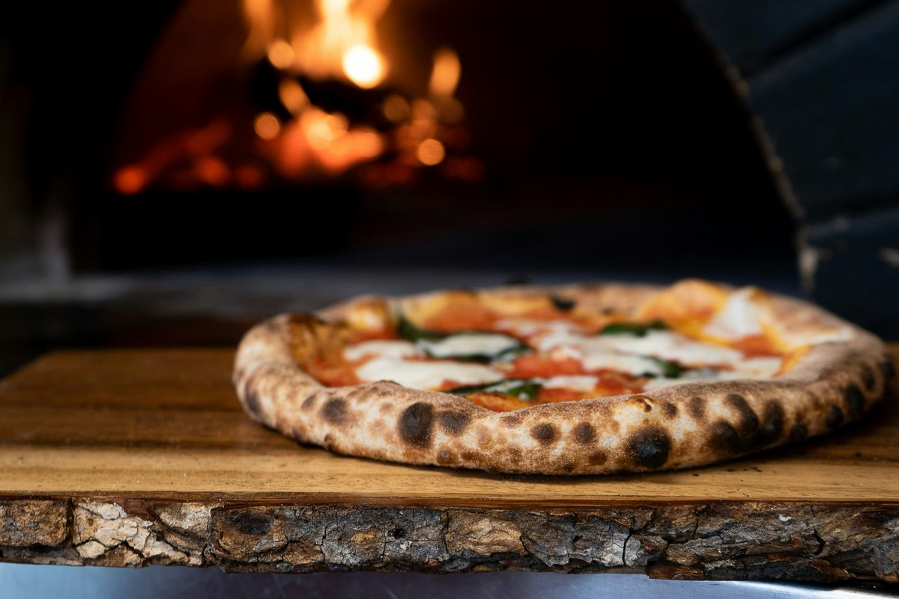

Vår historia
Malmö Eld & Deg grundades 2024 av Youssef Romano, uppvuxen i Malmö med en tunisisk far och en napolitansk mor. Sommrarna tillbringade han i Neapel där hans morfar lärde honom hantverket – degen, ugnen, timingen.
Efter år som pizzaiolo i Neapel återvände Youssef till Malmö med en tydlig vision: äkta napolitansk pizza i vedeldad ugn – utan kompromisser på hantverket. Vår ugn når 485°C och bakar varje pizza på under 90 sekunder. Vi importerar San Marzano-tomater och fior di latte direkt från Kampanien.
Idag driver Youssef restaurangen tillsammans med sin dotter Yasmin. Morfar Aldos recept, samma passion – en ny generation som bär det vidare.
Se vår menyÖppettider
| Måndag – Torsdag | – |
| Fredag – Lördag | – |
| Söndag | – |
Storgatan 12, 211 22 Malmö · 040 – 123 45 67